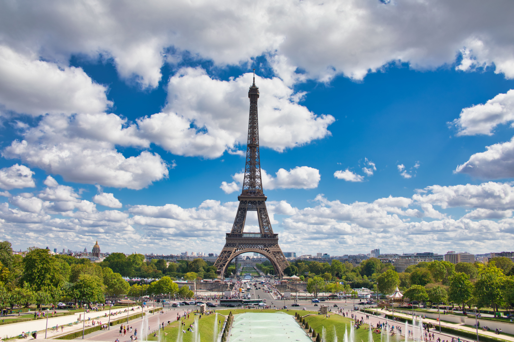

Top 3 lugares turisticos del mundo
Aqui veras una pequeña lista de los lugares mas visitados del mundo
- Paris, Francia
París es uno de los destinos más visitados del mundo. Su arquitectura, gastronomía y ambiente romántico la hacen única
 - Machu Picchu, Perú
Machu Picchu es una maravilla del mundo moderno. Rodeado de montañas y misterio, es un lugar imperdible para los amantes de la historia y la naturaleza.

- Tokio, Japón
Tokio combina rascacielos futuristas con templos antiguos. Es un destino que mezcla lo tradicional con lo moderno de forma espectacular